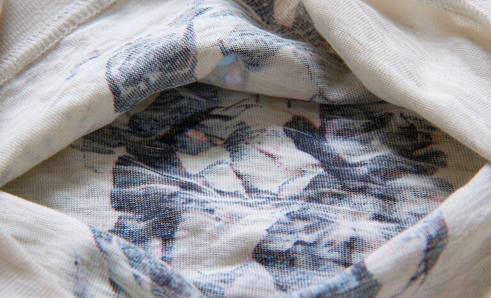

Custom T-Shirt Print Quality Compared: DTG vs Screen Printing After 20 Washes
Short answer: after 20 identical wash cycles, screen printing faded slightly less on solid-color designs, while DTG kept far more detail on photographic art, and both stayed wearable with no cracking.
Bottom line: the verdict is simple: choose screen printing for bold one or two color designs in bulk, and DTG for detailed or photo designs in small orders, then wash cold inside out either way.

DTG or screen printing is the first fork in every custom t-shirt order, and most explanations stop at theory. We printed the same two designs, a bold one-color logo and a full-color photo, using both methods, then ran every shirt through 20 identical wash cycles. Here is what changed and what did not.
The Bold Logo Design: Nearly a Tie
On the one-color logo, screen printing edged out DTG on opacity after 20 washes, keeping a touch more of its original punch on dark fabric. DTG on the same design lost a little brightness but showed no cracking. Honestly, both shirts still look new enough that strangers would not notice a difference on a worn shirt.
The Photo Design: DTG Wins Clearly
Screen printing simply cannot hold photographic gradients without heavy color separation, so the screen-printed photo design shipped looking posterized. The DTG photo print kept its gradients and detail through all 20 washes, softening slightly in the highlights. For photo shirts, DTG is the only real contest.
Hand Feel and the Wash Routine That Protects Both
Screen prints feel like a thin plastic layer; DTG feels like part of the fabric. After 20 washes, both softened. The routine that protected both identically: cold water, inside out, gentle cycle, no bleach, and either hang dry or low-heat tumble. Hot dryers remain the fastest way to age any custom print.
DTG vs Screen Printing After 20 Washes
| Measure | DTG | Screen printing |
|---|---|---|
| Bold one-color logo | Slight brightness loss | Best opacity, no cracking |
| Photo design | Gradients held, clearly better | Posterized even before washing |
| Hand feel | Soft, part of the fabric | Thin plastic-like layer |
| Best order size | 1-50 shirts | 25+ identical designs |
Frequently Asked Questions
Which lasts longer, DTG or screen printing?
After 20 washes on identical designs, screen printing held opacity slightly better on bold solid-color art, while DTG preserved far more detail on photo designs. Both survived without cracking when washed cold.
When should I choose screen printing for custom shirts?
Choose it for bold one or two color designs in batches of 25 or more, where per-shirt cost drops and print opacity is strongest. For photo or multicolor art in small orders, DTG wins.
How do I wash custom printed t-shirts so prints last?
Cold water, inside out, gentle cycle, no bleach, and hang dry or low-heat tumble. Hot dryers age both DTG and screen prints faster than any washing choice.